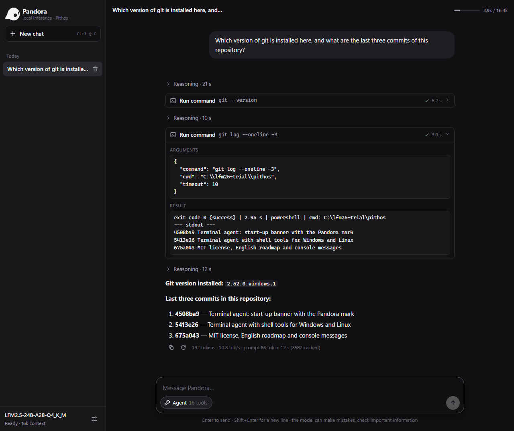

Direct quantized execution
Supported quantized weights are read from the mapped GGUF file. CPU quantized matrix operations use Q8_K activations instead of expanding the full model to floating point.
Pithos runs Liquid AI's LFM2, LFM2.5 and LFM3 GGUF models locally. Written in C11, with SIMD CPU kernels and optional OpenCL acceleration. Chat, tools, and APIs share the same engine.
Open source · Windows and Linux · No GPU required
24 billion parameters, about 2 billion active per token. The deepest answers; runs from disk when RAM is short.
.\build\pithos.exe --serverSpeeds measured on a laptop: Core i5-10500H, 16 GB, GTX 1650 4 GB. The setup guide below follows your choice.
You do not need to be a developer. Set aside some disk space and download time, open the right terminal, and follow one step at a time.
A 64-bit computerNative Windows and Linux guides. WSL2 is an optional Windows alternative.
RAM as a referenceNot a guaranteed minimum. With WSL, also check how much memory Ubuntu receives.
At least 15 GB free for the modelAbout 14.5 GB to download. Allow extra room for the compiler and, if used, Ubuntu.
Model: LFM2.5-24B-A2B · change it at the top of the page
Ubuntu / Debian · guided setup
Pithos executes the model.
Pandora provides the chat.
Your applications use the same runtime.
The engine loads GGUF weights, processes prompts, schedules CPU and optional GPU work, and generates the next tokens. The browser chat and agents are included ways to access that runtime.
The project is designed for Liquid AI LFM2, LFM2.5 and LFM3 models. Two are validated against reference implementations: the 24B MoE reference model and the small LFM3-1.7B.
Inside the projectSupported quantized weights are read from the mapped GGUF file. CPU quantized matrix operations use Q8_K activations instead of expanding the full model to floating point.
Asynchronous read-ahead, expert prediction, and an optional VRAM expert cache help the engine work with weights larger than free RAM. Performance still depends on memory and storage.
Use the CLI, Pandora, or OpenAI-compatible HTTP endpoints. Agent tools extend those interfaces; they are not the inference engine itself.
The engine is the execution layer.
The interfaces send prompts and receive generated tokens.
Memory-mapped file.
Supported quantized formats stay in their stored representation.
Tokenization, routing, attention/convolution, and selected experts run through the CPU path.
SCALAR / AVX2 / NEON*Cached experts can run on GPU. Dense decode weights and state can remain in VRAM for single-token generation; dense models such as LFM3 keep every layer there.
HOT EXPERTS + DENSE DECODELogits are sampled into the next token. Repeating the forward pass produces the response.
Tokens → interfaceThe model is data. The GGUF file contains the weights. Pithos is the program that executes them.
GPU offload is optional. Hybrid execution requires compatible OpenCL hardware and drivers. This diagram describes the engine, not your current hardware.
Implementation and validation differ. ARM64 NEON is implemented; the published CPU validation here is x86-64. GPU acceleration was validated on native Windows (NVIDIA, Intel, AMD), not in our WSL2 environment.
| Implementation | C11. Standard Win32 / POSIX APIs. No external ML runtime or build-time libraries. |
|---|---|
| Model architectures | lfm2 dense, lfm2moe and lfm3 (sliding-window and gated attention), loaded from GGUF. |
| CPU weight formats | Q4_K, Q5_K, Q6_K, Q8_0, Q4_0, F16, F32. |
| CPU kernels | Scalar fallback; runtime-selected AVX2 / FMA / F16C on x86-64. NEON implemented for ARM64. |
| GPU backend | Optional, runtime-loaded OpenCL, Q4_K and Q6_K weights. MoE models: hot experts and dense layers in VRAM. Dense models: every layer in VRAM. |
| Prompt processing | CPU batch path with expert grouping. VRAM-resident experts may still be offloaded to GPU. |
| Hybrid generation | GPU-resident dense decode and cached experts; CPU workers compute non-resident experts in parallel. Expert-only offload is also available. |
| Memory and reuse | Mapped weights, Q8_K activations for CPU quantized matmuls, asynchronous read-ahead, expert prediction, and KV/convolution checkpoints. Prompt reuse can persist to disk. |
| Threads / batches | Configurable worker pool. Defaults: physical-core count; 64-token prompt batch. |
| Context | 8,192 tokens for CLI by default; 16,384 for server/agent. Configurable up to the model limit; reference documentation lists 131,072. Actual capacity depends on memory. |
| Interfaces | CLI, embedded Pandora UI, terminal/web agents, MCP client, and OpenAI-compatible HTTP endpoints. Inference requests share one context and are serialized. |
| Platforms / license | Windows native and Linux. macOS / ARM64 paths remain unverified here. Engine code: MIT. |
| GGUF file | LFM2.5-24B-A2B-Q4_K_M.gguf |
|---|---|
| Parameters | Approximately 24 billion total; approximately 2 billion active per token. |
| Hybrid layers | 40 layers: 10 attention and 30 short-convolution layers. |
| MoE feed-forward | 38 MoE layers. Each selects 4 of 64 experts. |
| Quantization recipe | Q4_K_M GGUF, containing supported block types such as Q4_K and Q6_K. |
| Download size | 14,526,258,464 bytes — about 14.5 GB / 13.5 GiB. Reserve at least 15 GB for the model alone. |
| RAM reference | 16 GB is a reference configuration, not a universal minimum or a performance guarantee. Consider memory assigned to WSL separately. |
| Model license | LFM Open License v1.0. Separate from the engine MIT license; see the Liquid AI repository ↗. |
| GGUF file | LFM3-1.7B-Q4_K_M.gguf |
|---|---|
| Layers | 24 layers: 13 short-convolution, 6 full-attention and 5 sliding-window (256-token) attention layers. |
| Download size | 1,099,627,808 bytes — about 1.1 GB / 1.0 GiB. Fits in 4 GB of RAM. |
| Speed | About 55 tokens/s with the whole model in a 4 GB GPU, about 20 on the CPU alone (laptop above). |
| Model license | LFM Open License v1.0; see the Liquid AI repository ↗. |
Scalar/AVX2 kernel checks, reference-model inference, and server tests passed on x86-64. OpenCL GPU acceleration was not validated in that WSL2 environment.
LFM3-1.7B: tokenizer identical to Hugging Face, chat template identical to the model's own, and perplexity matching an independent PyTorch implementation (4.390 vs 4.390 with the GPU f32 kernels).
A documented context limit is not a completed full-context validation. Other model files are not interchangeable with the validated ones.
Specifications follow the project README and the model runtime. The engine and model have separate capabilities and licenses.
Start with Pandora, or connect an application.
Every interface uses the Pithos runtime.
After setup, start the server and open the local address. Keep the terminal open while you chat.
./build/pithos --server --no-gpuThen open http://127.0.0.1:8080 in your browser.

Pandora is the web interface included with Pithos. Open your conversations in the browser, and see the tools and their results when using agent mode.
Open it on your computerFor developers, Pithos also offers an OpenAI-compatible API. Read the documentation ↗
Give your local agent access to files, commands, and external tools. Pithos is an MCP client: it connects to servers you configure and adds their tools to the agent.
list_directory, read_file, find_files, search_text, write_fileweb_search, fetch_url, calculator, get_current_datetimerun_command, start_process, read_process, stop_process, list_processes, edit_fileTerminal agents have shell tools available. For browser agents, start Pithos with --server --shell. File tools use the working folder selected with --workspace.
mcp.json, or pass --mcp PATH. Pithos discovers their tools and lists them as server__toolname.Find integrations in the official MCP registry ?. Check the server's transport, required runtime, credentials, and installation instructions.
Python is required. Open a terminal in the Pithos repository folder. These commands use the example configuration already included in tests/mcp_test.json and list tools without loading the model.
.\build\pithos.exe --mcp tests/mcp_test.json --tools-list./build/pithos --mcp tests/mcp_test.json --tools-listThe example launches python; change it to python3 in the JSON configuration if that is your installed command.
To use the configured server in an agent, replace --tools-list with --agent and provide your model path with -m. Use --server --shell for the browser interface. Pithos stops its MCP processes when it exits.
For application integrations, GET /v1/tools lists tools and MCP server states; POST /v1/tools/call invokes a tool. These are Pithos HTTP endpoints, not an MCP server transport.
A technical project, explained without assuming you know the jargon.
Ask the communityPithos is the program that runs the AI. The model contains the data and weights needed to generate answers. Pandora is the built-in web chat. On Linux, build.sh --download-model can build the program and download the reference model, or --download-model=lfm3-1.7b the small one.
No. Pithos builds and runs natively on Windows with build.cmd. You need a compiler: GCC from MSYS2 or MSVC from Visual Studio/Build Tools. The Windows guide uses MSYS2. Ubuntu through WSL2 is an alternative, not a requirement.
No. You can start with the CPU. A compatible GPU can speed things up, but needs suitable OpenCL hardware and drivers: LFM3-1.7B goes from about 20 to about 55 tokens per second on a 4 GB laptop GPU. Our Ubuntu/WSL2 testing covered CPU inference; GPU acceleration was not verified in that environment.
Yes. Once you have downloaded the program, prerequisites, and model, you can chat locally offline. Web searches, URLs, and connected external services need Internet access and may send data to those services.
The Pithos code is open source under the MIT license. Model weights have a separate license, available in the Liquid AI repository. Not every GGUF file is compatible. Two are validated: LFM2.5-24B-A2B-Q4_K_M.gguf, the reference model, and the small LFM3-1.7B-Q4_K_M.gguf. On Linux, bash build.sh --list-models shows them.
Open a terminal in the Pithos folder. On Windows run .\build\pithos.exe --server --no-gpu; on Linux run ./build/pithos --server --no-gpu. With LFM3-1.7B, add -m models/LFM3-1.7B-Q4_K_M.gguf. Open http://127.0.0.1:8080 in your browser and keep the terminal open. There is no need to build or download everything again.
With the Linux script, run the same bash build.sh --download-model command again (with =lfm3-1.7b if you chose the small model). Partial data is kept and the transfer resumes when possible. The model becomes available only after size and SHA-256 checks pass. On Windows, resuming depends on your browser or download tool.
Your first step is choosing where to begin.